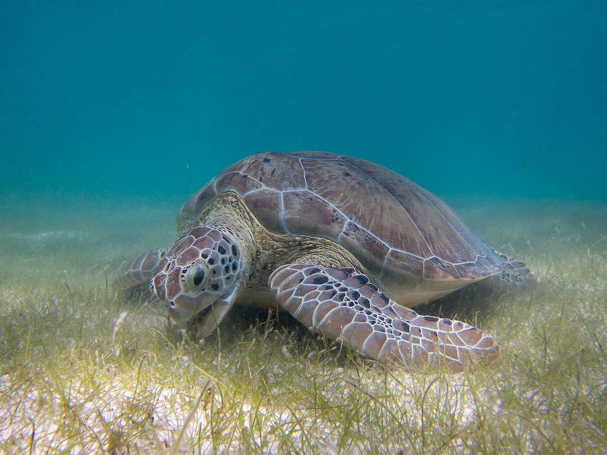
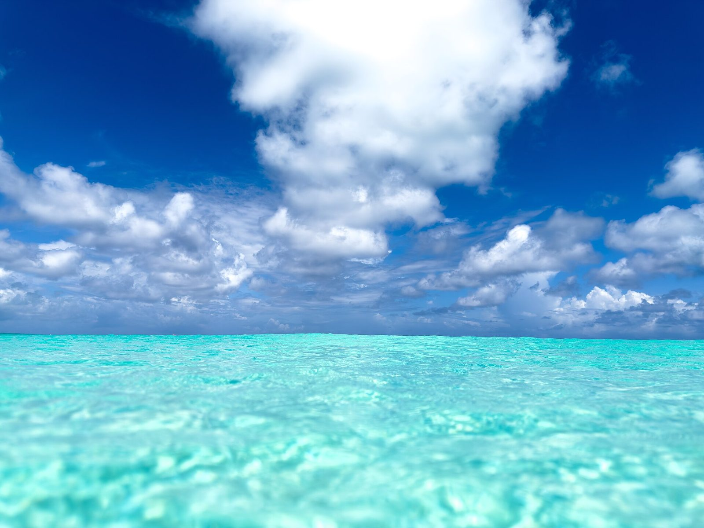
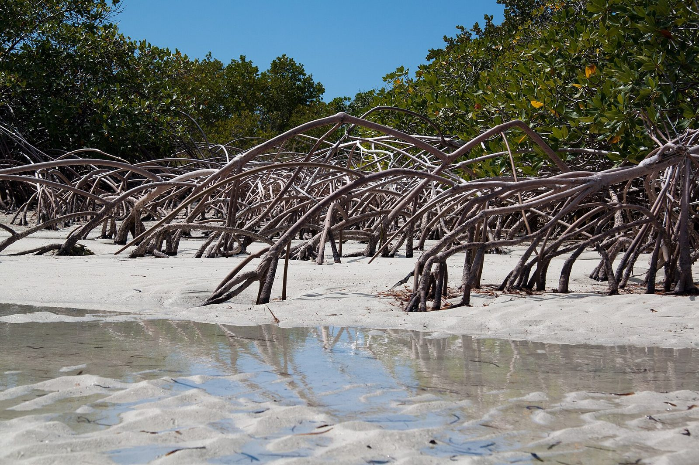
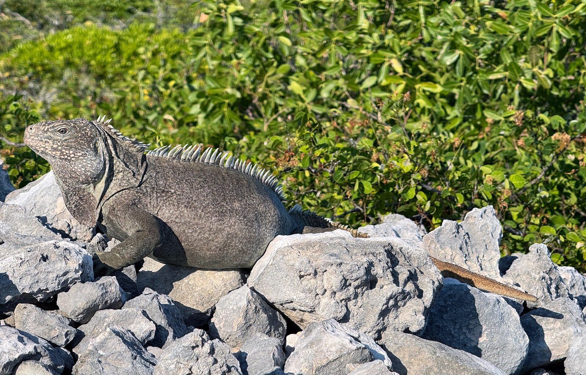
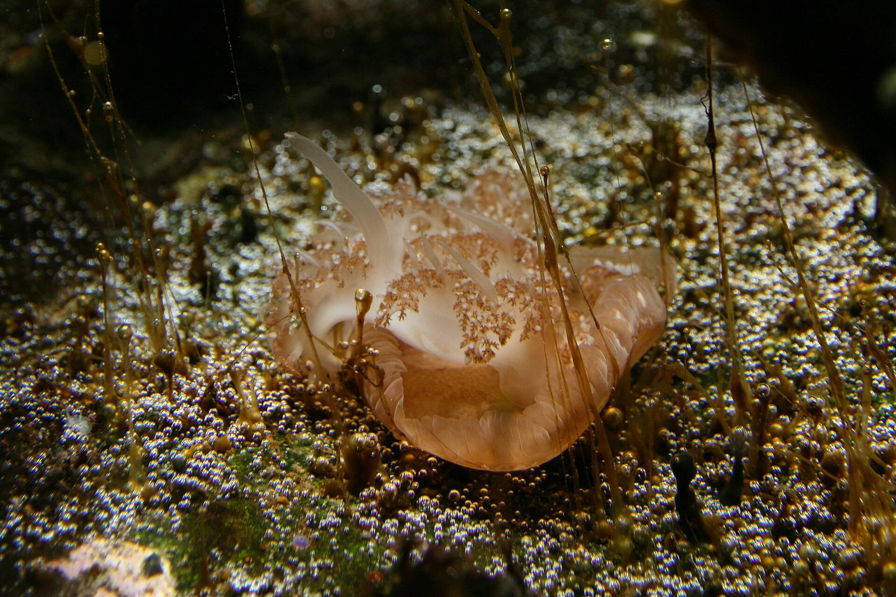
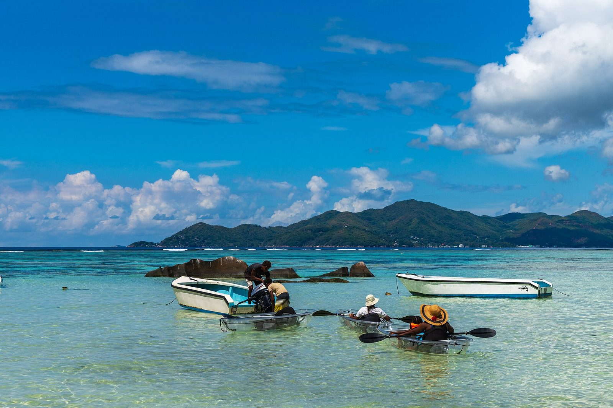
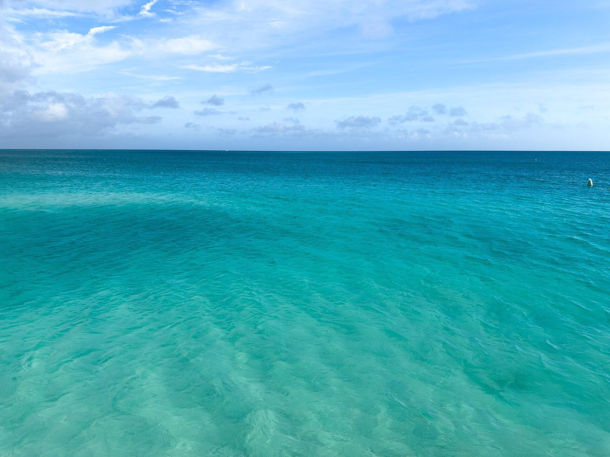
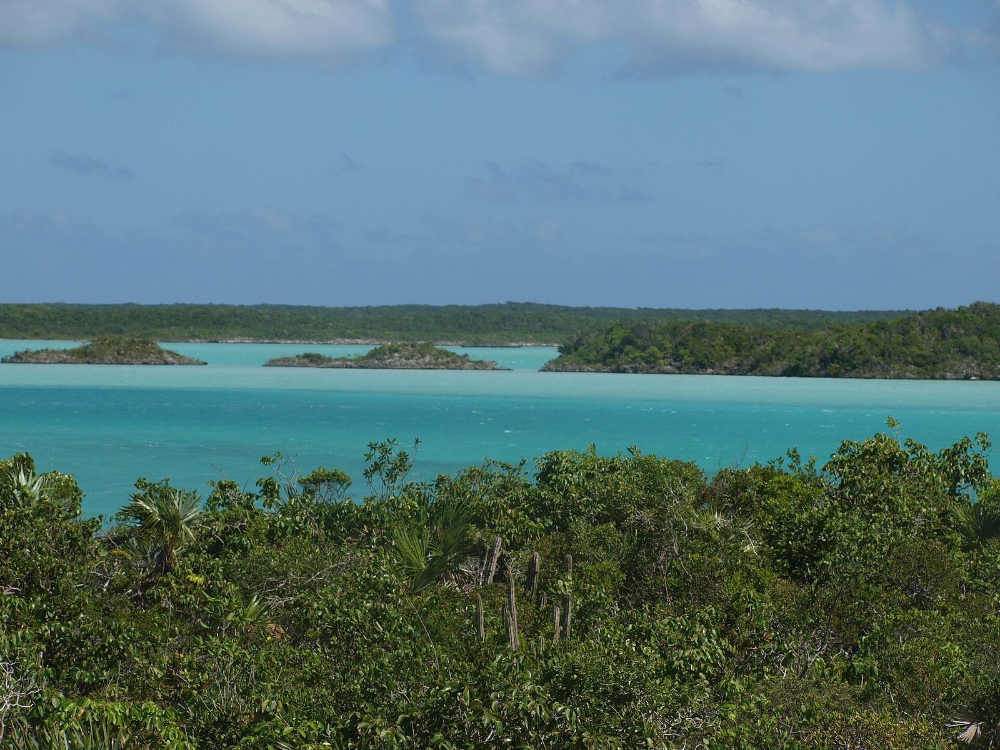
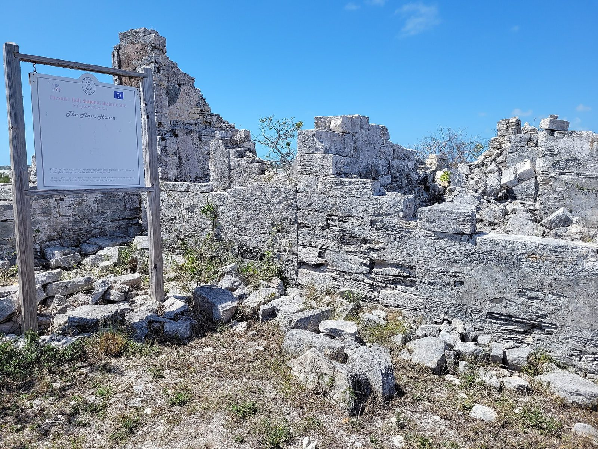

Clear kayak

Mangrove Clear Kayak Tour
Paddle the mangrove channels of Mangrove Cay, inside the Princess Alexandra Nature Reserve, and look down through the hull.

Island Adventure TCIClear kayaks through the mangroves, private charters to the cays and ATV trails on Provo's wild west side, with guides born and raised here.
Pick your day4.9
out of 5 from 1,564 reviews

Island Adventure TCI is a locally owned eco-tour and charter company on Providenciales. The guides know these islands like no one else: which mangrove channel the turtles graze in, which cay the rock iguanas sun on, which trail runs out to the cliffs at West Harbour Bluff. Groups stay small, there is no deposit to book, and a free shuttle brings you to the start. When you book direct, more of what you pay stays with the people who take you out.

Paddle the mangrove channels of Mangrove Cay, inside the Princess Alexandra Nature Reserve, and look down through the hull.

The mangroves first, then on to Iguana Island to meet the endemic Turks and Caicos rock iguanas.
What you might see through the floor, depending on the day: green sea turtles, upside-down jellyfish, queen conch, juvenile sharks, snapper, starfish and stingrays. Tours launch from Heaving Down Rock Marina, a short paddle from Mangrove Cay.


A private charter with your own captain and guide: island hopping, snorkelling, secluded beaches and sandbars, at your group's pace. Snorkel gear is on board. Stops may include Little Water Cay, Half Moon Bay, Water Cay, Fort George Cay, Dellis Cay, the shipwreck and Pirate's Cove, depending on the sea that day.
Cruise the turquoise water, snorkel, and pick stops like the shipwreck or the cay where the rock iguanas live. Water, soda, local beer and light snacks included.
Check datesA morning or an afternoon of cruising, snorkelling, sightseeing, island hopping or doing nothing on a quiet beach. Water, soda, local beer, rum punch, fruit and snacks included.
Check datesBeaches, cays and marine life from morning to late afternoon, with a lunch made by the crew. Water, soda, local beer, rum punch, lunch, fruit and snacks included.
Check datesIn season, add a lobster or conch dive followed by time on a secluded island. It depends on the season, the conditions and the fishing rules.
Ask usBlu Pearl is a 27-foot Regal with a 300 hp engine, a sun lounge and a big swim platform. One Moor Time is a 36-foot catamaran on twin 300 hp Yamahas, with room for 25 or more.

Leave the resorts behind on dusty, rocky trails past Chalk Sound toward Frenchman's Creek and Pigeon Pond, with stops near West Harbour Bluff, Pirate's Cave, Split Rock and Proggin Bay. Cliffs, salt flats, caves, old rock inscriptions and quiet beaches.

A private ATV or UTV day for a family or group, three to four hours with lunch. Pick the stops: Sapodilla Bay, Taylor Bay and Hidden Beach, Cheshire Hall Plantation, the Prince House, Pirate's Cove, the Junkanoo Museum, Northwest Point, the Long Bay Hole, the vendors' market and a conch shack for lunch.
At least 4 ATVs or 3 UTVs. Call to book.
Call 649 332 8463
The live wind forecast for Leeward, Providenciales, read the way a guide would. Calm water is clearest through a kayak floor, a breeze is fine on a boat, and the trails don't mind the wind.
Loading the forecast. If it does not appear, call 649 332 8463 and ask which day is best.
Forecast from Open-Meteo. A rule of thumb, not a promise: the team chooses the route on the day.
Places the guides take you, by water and by trail. Rated 4.9 out of 5 from 1,564 reviews. Been out with them? Tell the next person.
No deposit is required.
There is a free shuttle. Kayak tours launch from Heaving Down Rock Marina, and the company is based at Blue Haven Marina in Leeward.
Often, but wildlife changes with the day and the conditions. Turtles, upside-down jellyfish, conch, juvenile sharks and rock iguanas are all common sightings.
Drivers must be at least 18 and hold a valid driver's licence. Helmets and goggles are provided.
Closed-toe shoes with grip, no flip-flops, and sunscreen. Expect dust.
Water, soda and local beer on every trip; rum punch, fruit and snacks on the half day; lunch as well on the full day. Snorkel gear is on board.
Yes. The custom private tour lets you choose the stops, with at least 4 ATVs or 3 UTVs.
In season, as part of a private charter. It depends on the season, the conditions and the fishing regulations.
Opens your email app with the tour and date filled in. Or book online.
Prefer to talk? 649 332 8463